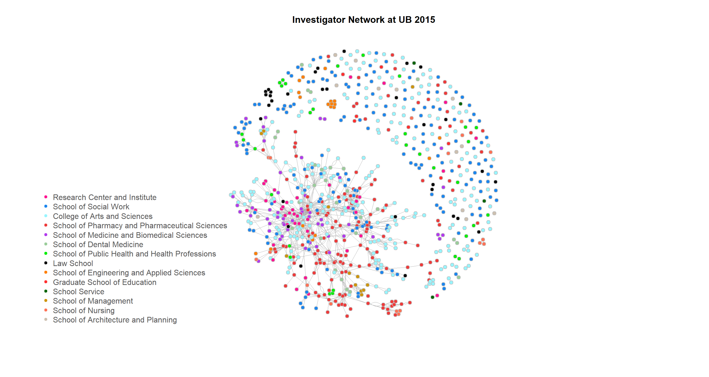

Investigator Networks at UB
Explore the collaborative proposal writing at UB
Yujia Pan
Introduction
At UB, professors are awesome and they get a LOT of grants every year!
But.. How do they collaborate and who write proposals together?
Problem Statement:
Today Scientific collaboration is already common within and among a large number of disciplines (Stefano et al., 2013; Newman, 2001a, 2001b, 2001c). One of the most widely discussed forms of scientific collaborations using social network analysis is co-authorship. Besides co-authorship (Newman, 2011), co-investigation that happens when investigators work on and submit a proposal together, is another form of scientific collaboration. Its importance is no less than the widely studied co-authorship. However, unlike co-authorship, little is studied about co-investigation relationships because information about proposal submission is not commonly available.Study Objectives: This project aims to reveal the characteristics of collaborative proposal writing at UB. There are three study objectives at three levels: the university level, the local/department level, and the individual level.
- Identify the topological characteristics of university-wide investigator networks at UB between the fiscal year 2011 and 2015.
- Test the community structure in a local investigator network at Geography Department.
- Visualize the evolvement of an ego network featuring a ‘star’ investigator over time.
- Significance:
- A better understanding of scientific collaborations.
- Promote collaborative proposal writing at UB.
- The approaches used can be applied to other institutions where research proposals are actively submitted.
You can toggle on/off all R codes at the top of this page.
Materials and Methods
Packages
Here are the pacakges needed to run the codes:
library(RCurl)
library(knitr)
library(igraph)
library(dplyr)
library(ndtv)
library(networkDynamic)
library(animation)
library(network)
library(tsna)Please see "Data" tab for the data used in the project.
Data
Data used in this project was acquired from UB Sponsored Projects Services (SPS) with the help of my advisor, Dr. Ling Bian. A total of 7,714 proposals submitted from UB between the fiscal year 2011 and 2015 involving 1,446 investigators are included in a series of spreadsheets.
These spreadsheets are preprocessed and organized into a relational database. The database is made up of three parts:
1. Collborated Investigators: These investigators collborated on proposals. Each record includes the identifier of PI/co-PI (ID1) and one co-PI (ID2), the ID of proposal they submitted together (PID), the year they submitted the proposal (Year), and the status of the proposal(Awarded).
corp <- getURL("https://raw.githubusercontent.com/LittlePennyPaw/Data/master/Data_Corp.csv",
ssl.verifyhost = FALSE, ssl.verifypeer = FALSE)
corp_frame <- read.csv(textConnection(corp), header = T)
knitr::kable(head(corp_frame), caption = "Example of Collborated Investigators Table")| ID1 | ID2 | PID | Awarded | Year |
|---|---|---|---|---|
| RIA24 | SSW13 | 11010008 | NO | 2011 |
| RIA24 | RIA26 | 11010008 | NO | 2011 |
| SSW13 | RIA26 | 11010008 | NO | 2011 |
| RIA24 | RIA16 | 11010009 | NO | 2011 |
| RIA24 | RIA17 | 11010009 | NO | 2011 |
| RIA16 | RIA17 | 11010009 | NO | 2011 |
2. Single Investigators: These investigators worked on their own. Each record includes the identifier of PI (ID), the ID of the proposal (PID), the year the proposal was submitted (Year), and the status of the proposal (Awarded).
single <- getURL("https://raw.githubusercontent.com/LittlePennyPaw/Data/master/Data_SIngle.csv",
ssl.verifyhost = FALSE, ssl.verifypeer = FALSE)
single_frame <- read.csv(textConnection(single), header = T)
knitr::kable(head(single_frame), caption = "Example of Single Investigators Table")| ID | PID | Awarded | Year |
|---|---|---|---|
| STEP02 | 11010051 | YES | 2011 |
| SNG17 | 11010074 | YES | 2011 |
| FMM08 | 11010087 | YES | 2011 |
| BIO19 | 11010094 | NO | 2011 |
| BCH18 | 11010096 | NO | 2011 |
| CHE23 | 11010100 | NO | 2011 |
3. Investigator Information: Each record includes the identifier of investigator (ID), his/her department and school affiliation (Department/School).
dept_2011 <- getURL("https://raw.githubusercontent.com/LittlePennyPaw/Data/master/Dept_2011.csv",
ssl.verifyhost = FALSE, ssl.verifypeer = FALSE)
dept2011_frame <- read.csv(textConnection(dept_2011), header = T)
dept_2012 <- getURL("https://raw.githubusercontent.com/LittlePennyPaw/Data/master/Dept_2012.csv",
ssl.verifyhost = FALSE, ssl.verifypeer = FALSE)
dept2012_frame <- read.csv(textConnection(dept_2012), header = T)
dept_2013 <- getURL("https://raw.githubusercontent.com/LittlePennyPaw/Data/master/Dept_2013.csv",
ssl.verifyhost = FALSE, ssl.verifypeer = FALSE)
dept2013_frame <- read.csv(textConnection(dept_2013), header = T)
dept_2014 <- getURL("https://raw.githubusercontent.com/LittlePennyPaw/Data/master/Dept_2014.csv",
ssl.verifyhost = FALSE, ssl.verifypeer = FALSE)
dept2014_frame <- read.csv(textConnection(dept_2014), header = T)
dept_2015 <- getURL("https://raw.githubusercontent.com/LittlePennyPaw/Data/master/Dept_2015.csv",
ssl.verifyhost = FALSE, ssl.verifypeer = FALSE)
dept2015_frame <- read.csv(textConnection(dept_2015), header = T)
knitr::kable(head(dept2011_frame), caption = "Example of Investigator Information Table")| ID | Department | School |
|---|---|---|
| RIA24 | Research Institute on Addictions | Research Center and Institute |
| SSW13 | School of Social Work | School of Social Work |
| RIA16 | Research Institute on Addictions | Research Center and Institute |
| PSY17 | Psychology | College of Arts and Sciences |
| PHS08 | Pharmaceutical Sciences | School of Pharmacy and Pharmaceutical Sciences |
| PT09 | Pharmacology & Toxicology | School of Medicine and Biomedical Sciences |
Please see "Methodology" tab for the methods used in the project.
Methodology
Corresponding to the three research objectives, three sets of methods will be applied in the study.
Before diving into analyses, a university-wide investigator network is built for each fiscal year. In these networks, nodes represent investigators and edges are established if two investigators collaborated on a proposal. Single investigators will be represented as isolated nodes. Each node is assigned properties, including investigator ID, and his/her department and school affiliation. Each edge is also assigned properties, including proposal ID and whether it was awarded.
# constructing five university-wide investigator networks assign colors to
# nodes based on school affiliation
color_matrix <- matrix(c("deeppink1", "dodgerblue2", "cadetblue1", "brown2",
"darkorchid2", "darkseagreen3", "green2", "gray0", "darkorange1", "firebrick1",
"darkgreen", "darkgoldenrod3", "coral1", "antiquewhite3"))
school_matrix <- matrix(nrow = 14)
mats <- list(dept2011_frame, dept2012_frame, dept2013_frame, dept2014_frame,
dept2015_frame)
corps <- list()
singles <- list()
networks <- list()
for (j in 1:5) {
year <- 2010 + j
corps[[j]] <- filter(corp_frame, Year == toString(year))
singles[[j]] <- filter(single_frame, Year == toString(year))
networks[[j]] <- graph.data.frame(corps[[j]], vertice = mats[[j]], directed = F)
V(networks[[j]])$color <- V(networks[[j]])$School
for (i in 1:14) {
V(networks[[j]])$color <- gsub(unique(mats[[j]]$School)[i], color_matrix[i],
V(networks[[j]])$color)
}
}
for (i in 1:14) {
school_matrix[i] <- toString(unique(dept2011_frame$School)[i])
}1. Identifying Topological Characteristics at University Level:
Given the five investigator networks at the university level, three sets of metrics, i.e., density, average path length, and centrality are used to analyze their topological characteristics.
The density is used to explore whether the investigators often work with many other investigators.
The average path length over the network is utilized to identify the number of ‘investigator steps’ between two investigators.
The centrality metrics are introduced to identify the ‘star’ investigators who are central and critical in the network. The top five investigators with the highest values of degree centrality, betweenness centrality, and closeness centrality are identified. one of the top ‘star’ investigator will be featured in the individual level ego network.
# Density and average pathlength
tyTable <- matrix(nrow = 2, ncol = 5)
for (i in 1:5) {
tyTable[1, i] <- round(edge_density(networks[[i]], loops = F), 4)
tyTable[2, i] <- round(mean_distance(networks[[i]], directed = F), 4)
}
rownames(tyTable) <- c("Density", "Average Pathlength")
colnames(tyTable) <- c("2011", "2012", "2013", "2014", "2015")
# Degree Centrality - Top 5
dcTable <- matrix(nrow = 5, ncol = 5)
for (i in 1:5) {
D <- igraph::degree(networks[[i]])
DD <- as.matrix(head(sort(D, decreasing = T), n = 5))
dcTable[, i] <- rownames(DD)
}
rownames(dcTable) <- c("Top1", "Top2", "Top3", "Top4", "Top5")
colnames(dcTable) <- c("2011", "2012", "2013", "2014", "2015")
# Betweeness Centrality - Top5
bcTable <- matrix(nrow = 5, ncol = 5)
for (i in 1:5) {
B <- igraph::betweenness(networks[[1]], directed = F, weights = NA)
BB <- as.matrix(head(sort(B, decreasing = T), n = 5))
bcTable[, i] <- rownames(BB)
}
rownames(bcTable) <- c("Top1", "Top2", "Top3", "Top4", "Top5")
colnames(bcTable) <- c("2011", "2012", "2013", "2014", "2015")
# Closeness Centrality - Top 5
ccTable <- matrix(nrow = 5, ncol = 5)
for (i in 1:5) {
C <- igraph::closeness(networks[[1]], mode = "all", weights = NA)
CC <- as.matrix(head(sort(C, decreasing = T), n = 5))
ccTable[, i] <- rownames(CC)
}
rownames(ccTable) <- c("Top1", "Top2", "Top3", "Top4", "Top5")
colnames(ccTable) <- c("2011", "2012", "2013", "2014", "2015")2. Testing the Community Structure at Local Level:
A local network at Geography Department is constructed out of my own curiosity and whether it has community structure is tested using Newman-Girvan algorithm. This algorithm of community detection is based on edge betweenness. Groups that consist of densely connected nodes and between which there are only looser connections will be identified as communities(Girvan & Newman, 2012). Edges with high betweenness values are removed sequentially in the algorithm and the community boundaries are determined.
The modularity of the local network will be analyzed. A high modularity value will reflect the existence of the community structure in the local network, suggesting the occurrence of established investigator groups. In this case, the number of communities will be calculated.
corp_geo <- filter(corp_frame, grepl("GEO", ID1) | grepl("GEO", ID2))
networks_geo <- graph.data.frame(corp_geo, directed = F)
V(networks_geo)$color <- ifelse(grepl("GEO", V(networks_geo)$name), "gold",
"gray")
ceb <- cluster_edge_betweenness(networks_geo)3. Visualizing the Evolvement at Individual Level:
Ego networks are widely used to discuss social relationships (Leskovec & Mcauley, 2012; Arnaboldi et al., 2012). The nodes in Ego networks consist of a focal node (‘ego’) and the nodes to whom ego is directly connected to (‘alters’). Based on the above analysis of topological characteristics, a ‘star’ investigator with high centrality values across the five fiscal years will be chosen as an ego. An ego network will be built around him/her and the evolvement of this ego network will be visualized in animation.
egonode <- getURL("https://raw.githubusercontent.com/LittlePennyPaw/Data/master/egonode.csv",
ssl.verifyhost = FALSE, ssl.verifypeer = FALSE)
node_frame <- read.csv(textConnection(egonode), header = T)
egoedge <- getURL("https://raw.githubusercontent.com/LittlePennyPaw/Data/master/egoedge.csv",
ssl.verifyhost = FALSE, ssl.verifypeer = FALSE)
edge_frame <- read.csv(textConnection(egoedge), header = T)
# build the networkDynamic object specifying nodes and edges
egonet <- networkDynamic(vertex.spells = node_frame[, c(3, 4, 1)], edge.spells = edge_frame[,
c(5, 6, 1, 3)])## Initializing base.net of size 36 imputed from maximum vertex id in edge records
## Created net.obs.period to describe network
## Network observation period info:
## Number of observation spells: 1
## Maximal time range observed: 0 until 3.5
## Temporal mode: continuous
## Time unit: unknown
## Suggested time increment: NA# assign static attributes in the network
network::set.edge.attribute(egonet, "award", as.vector(edge_frame$Award))
network::set.edge.attribute(egonet, "proposal", as.vector(edge_frame$Proposal))
network::set.vertex.attribute(egonet, "year", as.vector(node_frame$Year))
network.vertex.names(egonet) <- as.character(node_frame$vertex_name)
# configure the network
slice.par <- list(start = 0, end = 3.25, interval = 0.25, aggregate.dur = 0,
rule = "latest")
compute.animation(egonet, slice.par = slice.par, animation.mode = "kamadakawai")Results
The investigator networks
The investigator networks for the five fiscal years are displayed as below. We can notice that there are a large number of isolated nodes in the network. These nodes represent single investigators who submitted proposals by themselves and did not have collaborators during that year.
2011
plot(networks[[1]], vertex.size = 3, vertex.frame.color = "Gray", edge.width = 0.7,
isolates = singles[[1]], layout = layout_nicely(networks[[1]]), main = "Investigator Network at UB 2011",
vertex.label = NA)
legend("bottomleft", school_matrix, pch = 20, col = color_matrix, pt.cex = 1.5,
cex = 1, bty = "n", ncol = 1, text.col = "gray35")
2012
plot(networks[[2]], vertex.size = 3, vertex.frame.color = "Gray", edge.width = 0.7,
isolates = singles[[2]], layout = layout_nicely(networks[[2]]), main = "Investigator Network at UB 2012",
vertex.label = NA)
legend("bottomleft", school_matrix, pch = 20, col = color_matrix, pt.cex = 1.3,
cex = 1, bty = "n", ncol = 1, text.col = "gray35")
2013
plot(networks[[3]], vertex.size = 3, vertex.frame.color = "Gray", edge.width = 0.7,
isolates = singles[[3]], layout = layout_nicely(networks[[3]]), main = "Investigator Network at UB 2013",
vertex.label = NA)
legend("bottomleft", school_matrix, pch = 20, col = color_matrix, pt.cex = 1.3,
cex = 1, bty = "n", ncol = 1, text.col = "gray35")
2014
plot(networks[[4]], vertex.size = 3, vertex.frame.color = "Gray", edge.width = 0.7,
isolates = singles[[4]], layout = layout_nicely(networks[[4]]), main = "Investigator Network at UB 2014",
vertex.label = NA)
legend("bottomleft", school_matrix, pch = 20, col = color_matrix, pt.cex = 1.3,
cex = 1, bty = "n", ncol = 1, text.col = "gray35")
2015
plot(networks[[5]], vertex.size = 3, vertex.frame.color = "Gray", edge.width = 0.7,
isolates = singles[[5]], layout = layout_nicely(networks[[5]]), main = "Investigator Network at UB 2015",
vertex.label = NA)
legend("bottomleft", school_matrix, pch = 20, col = color_matrix, pt.cex = 1.3,
cex = 1, bty = "n", ncol = 1, text.col = "gray35")
Topological Characteristics at University Level
The table below shows that density is very low for all fiscal networks compared to previous studies on scientific collaboration networks (Newman, 2001a, 2001b, 2001c). This observation implies that the network is sparse. Investigators in these networks do not collaborate very often with many others across the campus, although they may have their own dedicated collaborators. One reason behind this situation may be the requirement of certain types of proposals. For example, the Career Award of the National Science Foundation (NSF) requires only one investigator. The average path length ranges from 4.6 to 6.2 during the five fiscal years, meaning that it takes about 4 to 6 ‘investigator steps’ for two investigators to work together. These values are similar to previous studies on scientific collaboration networks (Newman, 2000; Barabási et al., 2002) and can be all seen as small. These low values indicate a strong interconnection between investigators in the already established groups.
knitr::kable(tyTable, caption = "Topological Characteristics of the investigator networks")| 2011 | 2012 | 2013 | 2014 | 2015 | |
|---|---|---|---|---|---|
| Density | 0.0049 | 0.0055 | 0.0068 | 0.0057 | 0.0049 |
| Average Pathlength | 6.2703 | 5.3644 | 4.6245 | 4.9768 | 5.8180 |
Results of the third set of topological characteristics include degree, betweenness, and closeness centralities. The top five investigators with the highest values of degree centralities have more collaborators than any others and are heavily involved in the scientific collaboration. These investigators are mainly from the School of Engineering and Applied Sciences, the School of Public Health and Health Professions, and the School of Medicine and Biomedical Sciences.
knitr::kable(dcTable, caption = "Top 5 Degree Centrality")| 2011 | 2012 | 2013 | 2014 | 2015 | |
|---|---|---|---|---|---|
| Top1 | CHHB03 | CE13 | FMM03 | MAE18 | BCH02 |
| Top2 | CHE18 | MAE18 | BST05 | NER04 | CHE18 |
| Top3 | RIA16 | CHE18 | CSE30 | CCR06 | MAE18 |
| Top4 | EE17 | CHHB03 | PHA14 | NER05 | BST03 |
| Top5 | EE04 | PHS09 | SSW08 | CHE18 | RIA16 |
Similar to the results of degree centrality, the top five investigators with the highest values of betweenness centrality are mainly from the School of Engineering and Applied Sciences, the School of Public Health and Health Professions, and the School of Medicine and Biomedical Sciences. They are considered to be the hub in the networks and play an important role in facilitating the collaborations between investigators.
knitr::kable(bcTable, caption = "Top 5 Betweeness Centrality")| 2011 | 2012 | 2013 | 2014 | 2015 | |
|---|---|---|---|---|---|
| Top1 | CHE18 | CHE18 | CHE18 | CHE18 | CHE18 |
| Top2 | CSE09 | CSE09 | CSE09 | CSE09 | CSE09 |
| Top3 | CHI03 | CHI03 | CHI03 | CHI03 | CHI03 |
| Top4 | CSE32 | CSE32 | CSE32 | CSE32 | CSE32 |
| Top5 | CE13 | CE13 | CE13 | CE13 | CE13 |
The table below shows the information of the top five investigators with the highest values of closeness centrality during the five-year period. These investigators are mainly from the School of Engineering and Applied Sciences and the School of Medicine and Biomedical Sciences. They are considered to have high interconnections with other investigators in the networks.
knitr::kable(ccTable, caption = "Top 5 Closeness Centrality")| 2011 | 2012 | 2013 | 2014 | 2015 | |
|---|---|---|---|---|---|
| Top1 | CSE32 | CSE32 | CSE32 | CSE32 | CSE32 |
| Top2 | CHE18 | CHE18 | CHE18 | CHE18 | CHE18 |
| Top3 | EEH02 | EEH02 | EEH02 | EEH02 | EEH02 |
| Top4 | MDC16 | MDC16 | MDC16 | MDC16 | MDC16 |
| Top5 | CE13 | CE13 | CE13 | CE13 | CE13 |
Community Structure at Local Level
The local network at Geography Department is displayed as below. Orange nodes represent investigators from Geography Department and grey nodes are their direct collaborators from other departments. All five fiscal years are taken into account. The modularity of the local network turns out to be high (0.723), showing the existence of the community structure. This result iterates the above finding that investigators have strong interconnections in their established groups.
Further calculation suggested that there are in total 10 communities in this local network. The community graph and the dendrogram follow to offer a closer view of the community strucutre.
# plot the local network
plot(networks_geo, vertex.size = 8, vertex.frame.color = "Gray", edge.width = 1,
layout = layout_nicely(networks_geo), main = "Local Investigator Network at Geography Department",
vertex.label = networks_geo$name, vertex.label.cex = 0.6, vertex.label.dist = 1,
vertex.label.color = "black")
# test if community structure exists
modularity(ceb)## [1] 0.725161# the number of communities in the local network
length(ceb)## [1] 10# plot the community gragh
plot(ceb, networks_geo, vertex.label.cex = 0.6, vertex.size = 8, vertex.label.dist = 1,
vertex.label.color = "black", vertex.label.degree = -pi/2, vertex.label.font = 3,
main = "Community Graph of the Local Network")
# plot the dendPlot of the structure
dendPlot(ceb, mode = "phylo", type = "fan", label.offset = 0.2, cex = 0.7, main = "Dendplot ")
Ego Network Evolvement at Individual Level
According to the findings in centralities, a professor from the Chemistry Department (whose ID is CHE18) is at the top of the lists many times and on average have collaborated with more than 40 faculties in a year. He is highly capable of scientific collaborations and thus is chosen as the ‘ego’ in the ego network visualization.
The animated network below shows the temporal change of this ego network between the fiscal year 2011 and 2013. Dark red nodes include ego himself (CHE18) and other investigators who collaborated with him in 2011. As time went by, more investigators joined collaborated proposal writing with this professor and new alters are included in the ego network. Red nodes are those investigators joined in 2012 and pink are joined in 2013. Like the previous networks, edges show the collaboration on proposal writing. Orange edges denote awarded proposals while grey edges denote unawarded proposals.
# render the animation
render.d3movie(egonet, output.mode = "htmlWidget", displaylabels = T, label.cex = 0.6,
label.color = "darkgrey", vertex.col = ifelse(egonet %v% "year" == "1",
"darkred", (ifelse(egonet %v% "year" == "2", "red", "pink"))), edge.col = ifelse(egonet %e%
"award" == "YES", "orange", "darkgrey"), vertex.border = "lightgrey",
vertex.cex = 1, usearrows = F, nodeSizeFactor = 0.05)A timeline plot further illustrated the evolvement of the ego network, showing the addition of alters and the increase of edges. The colors assigned correspond to those in the animated ego network. We can clearly see that only a few new alters are included in 2013. It could suggest that the collaboration group around this investigator is nearly fully formed by that time.
# timeline plot for the egonet
timeline(egonet, slice.par = slice.par, displaylabels = F, edge.col = ifelse(egonet %e%
"award" == "YES", "orange", "darkgrey"), vertex.col = ifelse(egonet %v%
"year" == "1", "darkred", (ifelse(egonet %v% "year" == "2", "red", "pink"))))
Conclusions
This project applies social network analysis to explore the characteristics of collaborative proposal writing at UB during the fiscal year 2011 and 2015. Different investigator networks at three levels are built and analyzed. The study of topological characteristics of university-wide investigator networks over the five years shows that the networks are very similar to each other in structure. The rather low values of density imply that a large number of investigators do not collaborate with others at all or only collaborate with a few. The small value of average path length for each fiscal year indicates a strong interconnection between investigators in the already established groups. This strong interconnection in established groups is also discovered in the local network and the ego network. The analysis of three centralities for each fiscal year network illustrates that investigators with highest values of centrality are mainly from School of Engineering and Applied Sciences and the School of Medicine and Biomedical Sciences. Some investigators are active in scientific collaborations over the five years. Findings from this project lead to a conclusion that the topological characteristics of investigator networks at UB are similar to other scientific collaboration networks discussed in previous studies (Newman, 2001a, 2001b, 2001c; Barabási et al., 2002). Investigators within the established groups have persistent collaborations over the time. This small circle collaboration may be due to the commonly referred comfort zone phenomenon where investigators tend to collaborate repeatedly with former collaborators because they are familiar with each other’s ideas, methods, and equipment. It is also highly possible that proposals may take a number of years to succeed, so some investigators may work together for several years. Another reason may be that a group of investigators collaborate on different proposals of a similar topic and take turns being the lead investigator.
Closing Remarks
I’d like to take this chance to thank Dr. Wilson for introducing me to R and RMarkdown. I was exclusively using GUI-based network software such as Cytoscape to visualize social networks, and R really makes a great tool to do analyses.
Working on social networks with R is fun and frustrating at the same time (but mostly fun). An obvious advantage of R is that it offers a lot of built-in functions that can come in handy. With a higher level of competence at R, we can even write our own functions to calculate network metrics. The disadvantage of R in network analysis is also obvious, that it does not offer a real-time output of our codes. In traditional GUI-based software, we have the power to drag the nodes and edges anywhere we want so that the network layouts can be very flexible. However, as far as I know, in R, we can only use preset layouts and have limited control over the positions of the nodes. The process of achieving a nice layout is basically trial and errors. During this semester, I have seen a lot of interesting usage of R packages. In the future, I will definitely implement them in my projects. The dynamic visualization, such as leaflet maps, can be an eye-catching way to present study results. Learning is to keep getting bugs and errors, and keep solving them. :D
References
[1] De Stefano, D., Fuccella, V., Vitale, M. P., & Zaccarin, S. (2013). The use of different data sources in the analysis of co-authorship networks and scientific performance. Social Networks, 35(3), 370–381. [2] Newman, M. E. (2000). Models of the small world. Journal of Statistical Physics, 101(3–4), 819–841. Newman, M. E. (2001a). The structure of scientific collaboration networks. Proceedings of the National Academy of Sciences, 98(2), 404–409. [3] Newman, M. E. (2001b). Scientific collaboration networks. I. Network construction and fundamental results. Physical Review E, 64(1), 016131. [4] Newman, M. E. (2001c). Scientific collaboration networks. II. Shortest paths, weighted networks, and centrality. Physical Review E, 64(1), 016132. [5] Girvan, M., & Newman, M. E. (2002). Community structure in social and biological networks. Proceedings of the national academy of sciences, 99(12), 7821-7826. [6] Leskovec, J., & Mcauley, J. J. (2012). Learning to discover social circles in ego networks. In Advances in neural information processing systems (pp. 539-547). [7] Arnaboldi, V., Conti, M., Passarella, A., & Pezzoni, F. (2012, September). Analysis of ego network structure in online social networks. In Privacy, security, risk and trust (PASSAT), 2012 international conference on and 2012 international confernece on social computing (SocialCom) (pp. 31-40). IEEE. [8] Barabási, A. L., Jeong, H., Néda, Z., Ravasz, E., Schubert, A., & Vicsek, T. (2002). Evolution of the social network of scientific collaborations. Physica A: Statistical Mechanics and its Applications, 311(3), 590–614.